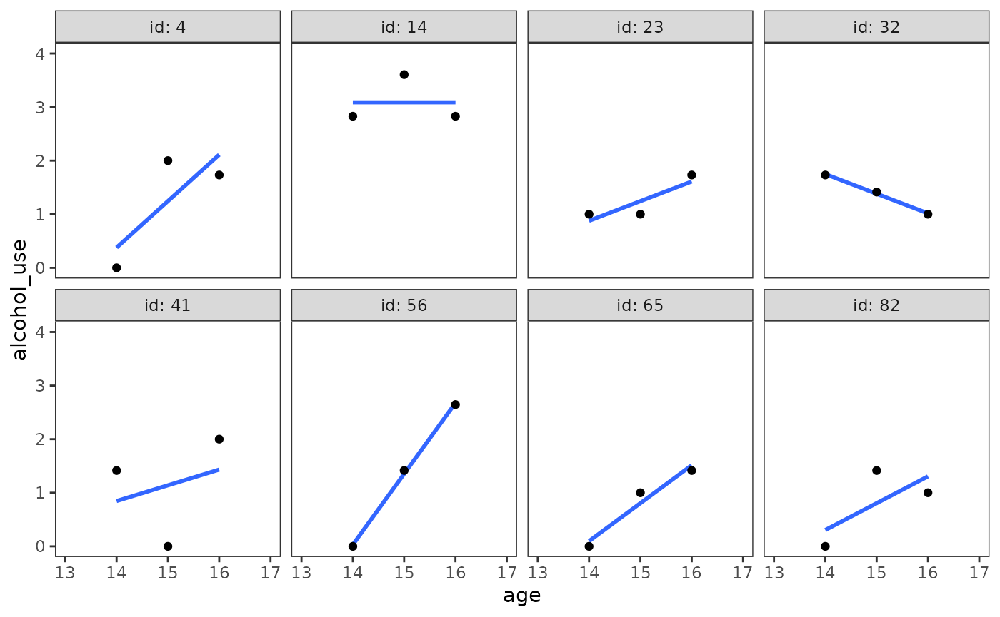

Chapter 4: Doing data analysis with the multilevel model for change
Source:vignettes/articles/chapter-4.Rmd
chapter-4.RmdThis chapter is under construction.
library(alda)
library(dplyr)
#>
#> Attaching package: 'dplyr'
#> The following objects are masked from 'package:stats':
#>
#> filter, lag
#> The following objects are masked from 'package:base':
#>
#> intersect, setdiff, setequal, union
library(tidyr)
library(purrr)
library(ggplot2)
library(patchwork)
library(lme4)
#> Loading required package: Matrix
#>
#> Attaching package: 'Matrix'
#> The following objects are masked from 'package:tidyr':
#>
#> expand, pack, unpack
library(broom.mixed)4.1 Example: Changes in adolescent alcohol use
Figure 4.1, page 77:
alcohol_use_1 |>
filter(id %in% c(4, 14, 23, 32, 41, 56, 65, 82)) |>
ggplot(aes(x = age, y = alcohol_use)) +
stat_smooth(method = "lm", se = FALSE) +
geom_point() +
coord_cartesian(xlim = c(13, 17), ylim = c(0, 4)) +
facet_wrap(vars(id), ncol = 4)
#> `geom_smooth()` using formula = 'y ~ x'
Figure 4.2, page 79:
To construct this display, we twice divided this subsample into two groups: once by COA (top panel) and again by PEER (bottom panel). Because PEER is continuous, the bottom panel represents a split at the sample mean. Thicker lines represent coincident trajectories—the thicker the line, the more trajectories.
figure_4.2 <- map(
set_names(c("child_of_alcoholic", "peer_alcohol_use")),
\(.x) {
# Wrangle
subset_data <- alcohol_use_1 |>
# In order to count the number of coincident trajectories, the data needs
# to be in wide format so we can group by each time point.
pivot_wider(names_from = age, values_from = alcohol_use) |>
mutate(
peer_alcohol_use = if_else(peer_alcohol_use < 1.01756, "low", "high"),
peer_alcohol_use = factor(peer_alcohol_use, levels = c("low", "high"))
) |>
# Indexing into the .data pronoun allows us to use group_by() with
# the character string inputs ("child_of_alcoholic", "peer_alcohol_use").
group_by(.data[[.x]], `14`, `15`, `16`) |>
summarise(n = n()) |>
ungroup() |>
# An ID is needed to indicate which observations go together after pivoting
# back to long format.
mutate(id = 1:n()) |>
pivot_longer(
cols = starts_with("1"),
names_to = "age",
names_transform = as.integer,
values_to = "alcohol_use"
)
# Plot
ggplot(subset_data, aes(x = age, y = alcohol_use, group = id)) +
stat_smooth(
aes(linewidth = n), method = "lm", se = FALSE, show.legend = FALSE
) +
scale_linewidth_continuous(range = c(.25, 4)) +
coord_cartesian(xlim = c(13, 17), ylim = c(0, 4)) +
# To learn about the .data pronoun, see:
# https://dplyr.tidyverse.org/articles/programming.html
facet_wrap(vars(.data[[.x]]), labeller = label_both) +
# We're going to create a shared axis label with patchwork later, see:
# https://tidytales.ca/snippets/2022-12-22_patchwork-shared-axis-labels/
ylab(NULL)
}
)
#> `summarise()` has grouped output by 'child_of_alcoholic', '14', '15'. You can
#> override using the `.groups` argument.
#> `summarise()` has grouped output by 'peer_alcohol_use', '14', '15'. You can
#> override using the `.groups` argument.
# Before plotting, remove redundant axis elements for aesthetics and set margins
# so it looks exactly the same as if the plot was created with facet_wrap(). The
# margin values selected here are based on the default theme values.
patch <- wrap_plots(figure_4.2, nrow = 2) &
theme(plot.margin = margin(0, 0, 0, 0))
patch[[1]] <- patch[[1]] +
xlab(NULL) +
theme(
axis.ticks.x = element_blank(),
axis.text.x = element_blank(),
plot.margin = margin(5.5, 5.5, 1.375, 0)
)
patch[[2]] <- patch[[2]] +
theme(plot.margin = margin(1.375, 5.5, 5.5, 0))
# Create a pseudo y-axis title using a tag.
wrap_elements(patch) +
labs(tag = "alcohol_use") +
theme(
plot.tag = element_text(
size = rel(1), angle = 90, vjust = 1,
margin = margin(b = 8.25, l = 5.5, r = 2.75)
),
plot.tag.position = "left",
plot.margin = margin(0)
)
#> `geom_smooth()` using formula = 'y ~ x'
#> `geom_smooth()` using formula = 'y ~ x'
4.4 First Steps: Fitting Two Unconditional Multilevel Models for Change
Table 4.1, page 94-95:
# Fit models:
model_A <- lmer(
alcohol_use ~ 1 + (1 | id),
data = alcohol_use_1,
REML = FALSE
)
model_B <- update(
model_A,
. ~ . - (1 | id) + I(age - 14) + (I(age - 14) | id)
)
model_C <- update(
model_B,
. ~ . + child_of_alcoholic + I(age - 14):child_of_alcoholic
)
model_D <- update(
model_C,
. ~ . + peer_alcohol_use + I(age - 14):peer_alcohol_use
)
model_E <- update(
model_D,
. ~ . - I(age - 14):child_of_alcoholic
)
model_F <- update(
model_B,
. ~ . + child_of_alcoholic +
I(peer_alcohol_use - 1.018) + I(age - 14):I(peer_alcohol_use - 1.018)
)
model_G <- update(
model_F,
. ~ . - child_of_alcoholic + I(child_of_alcoholic - 0.451)
)
# Collect models together for purrr:
table_4.1_models <- set_names(
list(model_A, model_B, model_C, model_D, model_E, model_F, model_G),
LETTERS[1:7]
)
# Estimates:
map_dfr(table_4.1_models, tidy, .id = "model") |>
select(-statistic) |>
pivot_longer(cols = c(estimate, std.error), names_to = "statistic") |>
pivot_wider(names_from = model, values_from = value) |>
arrange(effect, desc(group)) |>
print(n = 26)
#> # A tibble: 26 × 11
#> effect group term statistic A B C D E F
#> <chr> <chr> <chr> <chr> <dbl> <dbl> <dbl> <dbl> <dbl> <dbl>
#> 1 fixed NA (Int… estimate 0.922 0.651 0.316 -0.317 -0.314 0.394
#> 2 fixed NA (Int… std.error 0.0957 0.105 0.131 0.148 0.146 0.104
#> 3 fixed NA I(ag… estimate NA 0.271 0.293 0.429 0.425 0.271
#> 4 fixed NA I(ag… std.error NA 0.0625 0.0842 0.114 0.106 0.0613
#> 5 fixed NA chil… estimate NA NA 0.743 0.579 0.571 0.571
#> 6 fixed NA chil… std.error NA NA 0.195 0.162 0.146 0.146
#> 7 fixed NA I(ag… estimate NA NA -0.0494 -0.0140 NA NA
#> 8 fixed NA I(ag… std.error NA NA 0.125 0.125 NA NA
#> 9 fixed NA peer… estimate NA NA NA 0.694 0.695 NA
#> 10 fixed NA peer… std.error NA NA NA 0.112 0.111 NA
#> 11 fixed NA I(ag… estimate NA NA NA -0.150 -0.151 NA
#> 12 fixed NA I(ag… std.error NA NA NA 0.0856 0.0845 NA
#> 13 fixed NA I(pe… estimate NA NA NA NA NA 0.695
#> 14 fixed NA I(pe… std.error NA NA NA NA NA 0.111
#> 15 fixed NA I(ag… estimate NA NA NA NA NA -0.151
#> 16 fixed NA I(ag… std.error NA NA NA NA NA 0.0845
#> 17 fixed NA I(ch… estimate NA NA NA NA NA NA
#> 18 fixed NA I(ch… std.error NA NA NA NA NA NA
#> 19 ran_pa… id sd__… estimate 0.751 0.790 0.698 0.491 0.491 0.491
#> 20 ran_pa… id sd__… std.error NA NA NA NA NA NA
#> 21 ran_pa… id cor_… estimate NA -0.223 -0.219 -0.0334 -0.0335 -0.0335
#> 22 ran_pa… id cor_… std.error NA NA NA NA NA NA
#> 23 ran_pa… id sd__… estimate NA 0.389 0.388 0.373 0.373 0.373
#> 24 ran_pa… id sd__… std.error NA NA NA NA NA NA
#> 25 ran_pa… Resi… sd__… estimate 0.749 0.581 0.581 0.581 0.581 0.581
#> 26 ran_pa… Resi… sd__… std.error NA NA NA NA NA NA
#> # ℹ 1 more variable: G <dbl>
# Goodness of fit:
map_dfr(table_4.1_models, glance, .id = "model")
#> # A tibble: 7 × 8
#> model nobs sigma logLik AIC BIC deviance df.residual
#> <chr> <int> <dbl> <dbl> <dbl> <dbl> <dbl> <int>
#> 1 A 246 0.749 -335. 676. 687. 670. 243
#> 2 B 246 0.581 -318. 649. 670. 637. 240
#> 3 C 246 0.581 -311. 637. 665. 621. 238
#> 4 D 246 0.581 -294. 609. 644. 589. 236
#> 5 E 246 0.581 -294. 607. 638. 589. 237
#> 6 F 246 0.581 -294. 607. 638. 589. 237
#> 7 G 246 0.581 -294. 607. 638. 589. 237Figure 4.3, page 99:
# Model B
prototypical_alcohol_users_B <- tibble(age = 14:16)
prototypical_alcohol_use_B <- tibble(
alcohol_use = predict(
model_B,
prototypical_alcohol_users_B,
re.form = NA
)
)
modelbased::estimate_prediction(model_B, data = tibble(age = 14:16)) |>
ggplot(aes(x = age, y = Predicted)) +
geom_line() +
scale_x_continuous(breaks = 13:17) +
coord_cartesian(xlim = c(13, 17), ylim = c(0, 2)) +
labs(y = "alcohol_use")
prototypical_alcohol_users_B |>
bind_cols(prototypical_alcohol_use_B) |>
ggplot(aes(x = age, y = alcohol_use)) +
geom_line() +
scale_x_continuous(breaks = 13:17) +
coord_cartesian(xlim = c(13, 17), ylim = c(0, 2))
# Model C
prototypical_alcohol_users_C <- crossing(
age = 14:16,
child_of_alcoholic = 0:1
)
prototypical_alcohol_use_C <- tibble(
alcohol_use = predict(
model_C,
prototypical_alcohol_users_C,
re.form = NA
)
)
prototypical_alcohol_users_C |>
bind_cols(prototypical_alcohol_use_C) |>
mutate(child_of_alcoholic = factor(child_of_alcoholic)) |>
ggplot(aes(x = age, y = alcohol_use, colour = child_of_alcoholic)) +
geom_line() +
scale_x_continuous(breaks = 13:17) +
coord_cartesian(xlim = c(13, 17), ylim = c(0, 2))
modelbased::estimate_prediction(
model_C, data = crossing(age = 14:16, child_of_alcoholic = 0:1)
) |>
rename(alcohol_use = Predicted) |>
mutate(child_of_alcoholic = factor(child_of_alcoholic)) |>
ggplot(aes(x = age, y = alcohol_use, colour = child_of_alcoholic)) +
geom_line() +
scale_x_continuous(breaks = 13:17) +
coord_cartesian(xlim = c(13, 17), ylim = c(0, 2))
# Model E
prototypical_alcohol_users_E <- crossing(
age = 14:16,
child_of_alcoholic = 0:1,
peer_alcohol_use = c(0.655, 1.381)
)
prototypical_alcohol_use_E <- tibble(
alcohol_use = predict(
model_E,
prototypical_alcohol_users_E,
re.form = NA
)
)
prototypical_alcohol_users_E |>
bind_cols(prototypical_alcohol_use_E) |>
mutate(child_of_alcoholic = factor(child_of_alcoholic)) |>
ggplot(aes(x = age, y = alcohol_use, colour = child_of_alcoholic)) +
geom_line() +
scale_x_continuous(breaks = 13:17) +
coord_cartesian(xlim = c(13, 17), ylim = c(0, 2)) +
facet_wrap(vars(peer_alcohol_use), labeller = label_both)
4.8 Evaluating the Tenability of a Model’s Assumptions
Figure 4.4:
ols_fit <- lmList(
alcohol_use ~ I(age - 14) | id,
pool = FALSE,
data = alcohol_use_1
)
ols_fit |>
map_dfr(tidy, .id = "id") |>
select(-c(std.error, statistic, p.value)) |>
#pivot_longer(cols = c(estimate, names_to = "statistic") |>
left_join(
alcohol_use_1 |>
select(id, child_of_alcoholic, peer_alcohol_use) |>
distinct() |>
mutate(id = as.character(id))
) |>
pivot_longer(
cols = c(child_of_alcoholic, peer_alcohol_use),
names_to = "predictor"
) |>
ggplot(aes(x = value, y = estimate)) +
geom_hline(yintercept = 0, alpha = .25) +
geom_point(alpha = .5) +
facet_wrap(vars(predictor, term), dir = "v", scales = "free") +
ggh4x::facetted_pos_scales(
x = list(
predictor == "child_of_alcoholic" ~
scale_x_continuous(breaks = c(0, 1), limits = c(-1, 2)),
predictor == "peer_alcohol_use" ~
scale_x_continuous(limits = c(0, 3))
),
y = list(
term == "I(age - 14)" ~ scale_y_continuous(limits = c(-1, 2))
)
)
#> Warning in summary.lm(x): essentially perfect fit: summary may be unreliable
#> Warning in summary.lm(x): essentially perfect fit: summary may be unreliable
#> Warning in summary.lm(x): essentially perfect fit: summary may be unreliable
#> Joining with `by = join_by(id)`
Figure 4.5, page 131:
# Left side figures
library(easystats)
#> # Attaching packages: easystats 0.7.1
#> ✔ bayestestR 0.13.2 ✔ correlation 0.8.4
#> ✔ datawizard 0.10.0 ✔ effectsize 0.8.7
#> ✔ insight 0.19.10 ✔ modelbased 0.8.7
#> ✔ performance 0.11.0 ✔ parameters 0.21.6
#> ✔ report 0.5.8 ✔ see 0.8.3
performance::check_normality(model_F, effects = "fixed") |> plot(type = "qq")
#> For confidence bands, please install `qqplotr`.
performance::check_normality(model_F, effects = "random") |> plot(type = "qq")
#> [[1]]
Figure 4.6, page 133:
# Fixed effects
model_F |>
augment(re.form = NA) |>
ggplot(aes(x = id, y = scale(.resid))) +
geom_point() +
coord_cartesian(ylim = c(-3, 3))
# Random effects
model_F |>
ranef() |>
as_tibble() |>
rename(id = grp) |>
left_join(
alcohol_use_1 |>
select(id, child_of_alcoholic, peer_alcohol_use) |>
distinct() |>
mutate(id = factor(id))
) |>
pivot_longer(
cols = c(child_of_alcoholic, peer_alcohol_use), names_to = "predictor"
) |>
ggplot(aes(x = value, y = condval)) +
geom_point() +
scale_y_continuous(limits = c(-1, 1)) +
facet_wrap(vars(term, predictor), scales = "free_x") +
ggh4x::facetted_pos_scales(
x = list(
predictor == "child_of_alcoholic" ~
scale_x_continuous(breaks = c(0, 1), limits = c(-1, 2)),
predictor == "peer_alcohol_use" ~
scale_x_continuous(limits = c(0, 3))
)
)
#> Joining with `by = join_by(id)`
4.9 Model-Based (Empirical Bayes) Estimates of the Individual Growth Parameters
Figure 4.7:
alcohol_use_1_subset <- alcohol_use_1 |>
filter(id %in% c(4, 14, 23, 32, 41, 56, 65, 82))
alcohol_use_1_subset |>
mutate(
.fixed = predict(model_F, newdata = alcohol_use_1_subset, re.form = NA),
.fitted = predict(model_F, newdata = alcohol_use_1_subset)
) |>
ggplot(aes(x = age)) +
geom_point(aes(y = alcohol_use)) +
# The OLS lines can just be fit here, instead of going through the trouble
# of fitting them separately.
stat_smooth(
aes(y = alcohol_use),
method = "lm", se = FALSE, linetype = 2, linewidth = .5
) +
geom_line(
aes(y = .fixed), linewidth = .5
) +
geom_line(
aes(y = .fitted), linewidth = 1
) +
scale_y_continuous(breaks = 0:4, limits = c(-1, 4)) +
xlim(13, 17) +
facet_wrap(vars(id), nrow = 2, labeller = label_both)
#> `geom_smooth()` using formula = 'y ~ x'